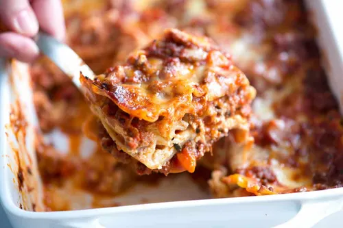

Home
Lasagna

Description
Making perfect homemade lasagna doesn’t have to be tedious. This top-rated easy lasagna recipe comes together
quickly with a relatively short ingredient list.
Ingredients
- Beef: This lasagna starts with ground beef. You can use ground turkey for lighter option.\n
- Spaghetti sauce: Use store-bought or homemade spaghetti sauce.
- Cheeses: You'll need cottage cheese, mozzarella, and Parmesan.
- Eggs: Eggs help bind the cheese mixture togetehr. Plus, htey lend moisture and richness.
- Seasonings: Season the easy lasgna with dried parsley, salt and black pepper.
- lasagna noodles: Of course, you'll need lasagna noodles!
- Water: Pour 1/2 cup of water around the edgesof hte baking dish before baking